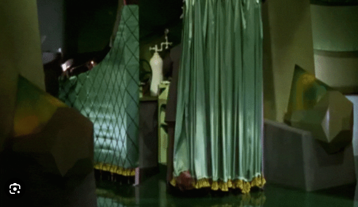

We have to reflect on the risk inherent in rushing to market an untested product. Our premise is that classical encryption is secure, as secure as its ever been, with or without any development of so-called quantum computers. This is a consequence of \(P\) not equal to \(NP\) as we understand it from C.A. Feinstein. This article will be brief, and here’s our main points:
Point 1: The implementation of so-called quantum encryption schemes is not necessary. The classical encryption schemes have not been broken by any quantum algorithms.
Point 2: Even if quantum computers are supposed to “break” classical cryptography, there is still the problem of deciding whether any quantum encryption algorithm is provably quantum secure.
Quantum computers are fashionable. Obviously there is a prestige and recognition associated with quantum physics. Thus public institutions feel pressured to implement quantum algorithms as if they are “state of the art”. But the so-called quantum algorithms remain highly experimental. Here we are speaking about the physical implementations. Not the linear algebra as implemented on Qiskit. The linear algebra is perfect, but the engineers working on Qiskit Pulse are the hardest working technical team on the planet. Indeed these are the engineers that have to actually physically implement Rabi oscillations at specified wavelengths for specific time intervals, and there is alot of reference to “simultaneity” in their works. The Qiskit Pulse engineers have a myriad of “behind the curtain” problems, and the Wizard of Oz is frantically at work behind the curtains. Thus we see no urgency to replace classical protocols with experimental “beta” versions.

Notice the double pressure: quantum computers simultaneously claim to threaten classical encryption, yet also simultaneously claim to give improved security over classical encryption. Therefore organizations are doubly prompted to adopt these experimental beta protocols.
But again we argue there is no indication of any “quantum speedup”. The accounting by which quantum computers measure “complexity” is not physical and does not coincide with the classical measure of complexity and resources. The quantum complexity of a quantum gate cannot be counted as a fixed unit. We argue the correct complexity of a gate is the size of its support. Therefore we are not persuaded by the supposed complexity of Shor’s algorithm in breaking RSA encryption and factoring large numbers. In other words, the complexity of Hadamard gates cannot be counted as a unit, but again rather the log of the support. This is contrary to most computer scientist opinion. In practice it means classical RSA should not surrender it’s flagship position as secure and unbeatable, quantum or no quantum.
The fundamental error, we argue, in the quantum interpretation is their miscounting the complexity of superpositions, images of Hadamard gates, as consisting of a single state. Yes, it’s a single state, but it’s a single nonpure state, i.e. a state with large support! We think this point is consistently overlooked in the quantum computer literature. Therefore superposition gates are more complex than identity gates.
This is the point of our critique of Deutsch’s algorithm as discussed in (Nielsen and Chuang 2010, 1.4.3–4). Deutsch’s algorithm looks to solve the following decision problem: Given a deterministic binary function \(f: \{ 0,1 \} \to \{ 0,1 \}\), then how many resources are required to decide whether \(f\) is a constant or non constant function. In otherwords, deterministically decide whether \(f(0)=f(1)\) or \(f(0)\neq f(1)\). The question is basically whether the complexity is equal to two units or one unit. (“\(2\) versus \(1\)”).
Classically it seems clear that equality “\(=\)” is a binary function, and therefore evaluation requires a single binary argument be given. This implies two evaluations of \(f\) are required. Deutsch and the “standard” quantum interpretation is that superposition allows for only a single call to \(f\). Specifically, they claim to define a unitary operator \(U_f\) defined by \[U_f:|x\rangle |y\rangle \mapsto |x \rangle |y\oplus f(x)\rangle,\] then pre- and post-composing with Hadamard-type gates they find a unitary transformation which concentrates on a state with the algebraic form \(\pm |f(0) \oplus f(1) \rangle (|0\rangle - |1 \rangle)\). We don’t think the conclusion of a single call to \(f\) is justified, and we maintain the classical position that the question is irreducible, and there is no escaping the fact that \(f(0)\) and \(f(1)\) need to be evaluated. This requires two function evaluations instead of Deutsch’s alleged one evaluation.
What is written above is this author’s opinion drawn from scientific study. But what’s important is experiment. Is there any way to really test whether Deutsch’s algorithm is actually twice as fast as the classical algorithm?
Our critique of Deutsch’s algorithm naturally extends to a critique of so-called “quantum parallelism”, for example as introduced in this interesting reference.
[-JHM]